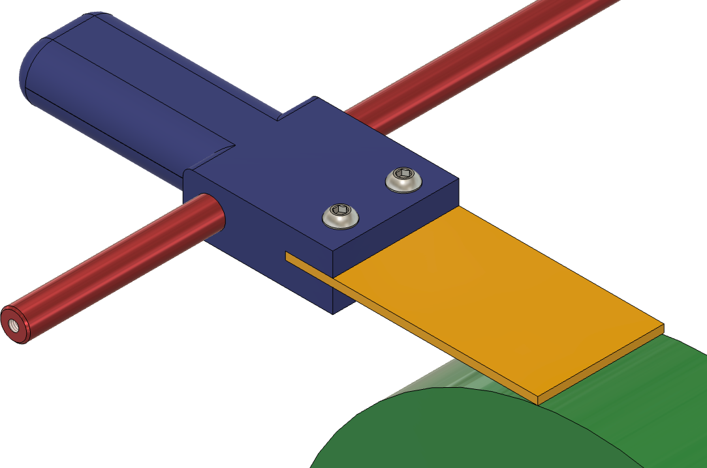

Break-in Jig
The break-in jig was requested by TormekMan, Ken Schroeder. His idea is that this gets used for new diamond or CBN grinding wheels to "break" them in, reducing the aggressiveness seen on new grinding wheels.
The jig is held on your machine's universal support bar (red part), and can be used in the vertical or horizontal position to break in a new grinding wheel (green part).
Very light pressure is used.
You can purchase one from Colvin Tools.
The 3D printing file is available as an STL.
|
Part |
STL File |
|---|---|
| Break-in Jig Handle | Break-In-Jig_Handle.stl |
The other parts needed are:
|
Part |
Qty |
Comments |
|---|---|---|
| Low-Carbon Steel Bar, ⅛” thick, 2” wide, 3-4” long | 1 | McMaster-Carr p/n 8910K399. McMaster-Carr offers other metal bars of this size. |
| Button Head Hex Drive Screw, 18-8 Stainless Steel, M6-1.0, 25mm Long | 2 | McMaster-Carr p/n 92095A242 |
| Medium-Strength Thin-Profile Hex Nut, M6-1.0 Thread | 2 | McMaster-Carr p/n 90695A038 |